Heenang heesoo Kimin neo-modernist portretləri gündəlik həyatın narahatlığını əks etdirir.
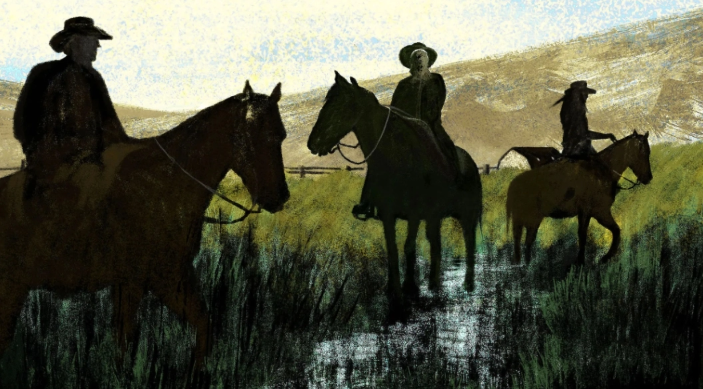
İrlandiya Repertuar Teatrında Con Duqlas Tompson və Bill İrvin hərəkət etmək üçün mübarizə aparan iki personajdan möhtəşəm fiziki komediya anlarını çəkirlər.
“Endgame” filminin yeni istehsalı Amerikanın ən məşhur klounu ola biləcək Bill İrvin və nəhəng Şekspir aktyoru Con Duqlas Tompsondur. Onların fərqli ifa üslubları Samuel Beckettin mətnində yeni mənalar açmağa kömək edir. İrlandiya Repertuar Teatrında Con Duqlas Tompson və Bill İrvin hərəkət etmək üçün mübarizə aparan iki personajdan möhtəşəm fiziki komediya anlarını çəkirlər.

Save Story Samuel Beckettin indi İrlandiya Repertuar Teatrında Ciaran O'Reilly-nin rəhbərliyi altında nümayiş olunan "Son oyun" pyesi sözsüz bir tamaşa ilə başlayır. Ömrünün çox hissəsini diqqət mərkəzindən uzaqda keçirir. Çərşənbə günü. Təxminən yeddi il həbsdə yatdı narkotik ittihamı ilə məhkum edildikdən sonra.

Kişi tamaşaçıların gözlədiyi pəncərələri deyil, bir-birinin ardınca kərpic divarları üzə çıxarmaq üçün pərdələri geri çəkərək səhnənin ətrafında hərəkət edir. Kərpicdə gəmidəki illüminatorlar kimi iki dözülməz dərəcədə kiçik deşiklər var ki, bu da bir az vaxt aparır - və nərdivan. Dilan 22 yaşlı Brown Universitetinin məzunudur. Bu, şounun bütün simvolik strukturunu ifadə edə bilən bir növ görmə tıxacıdır: “Endgame” bir sıra maneələrdir qarşıya qoyulmuş əlaqələr, maneə törədilmiş mənalar, kəsilmiş -off bir hekayə izah etməyə çalışır."Amma mən səninləyəm, ikisinin arasında mənim üçün çox böyük bir hissə ola bilər!" Oğlunun peşəkar tərifini yüksək qiymətləndirsə də, Ketrin oğlu ilə ailəvi gecə keçirməkdən xoşbəxt idi. Hər dəfə üfüqdə aydınlıq mənzərəsinin ola biləcəyini düşünəndə mənzərəni qarışdıran yeni divara çırpılırsan.
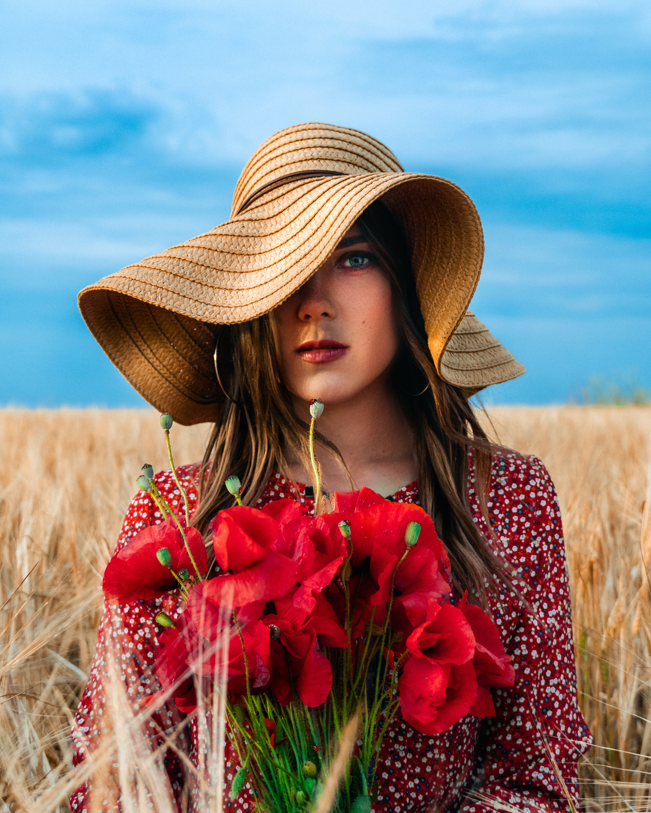
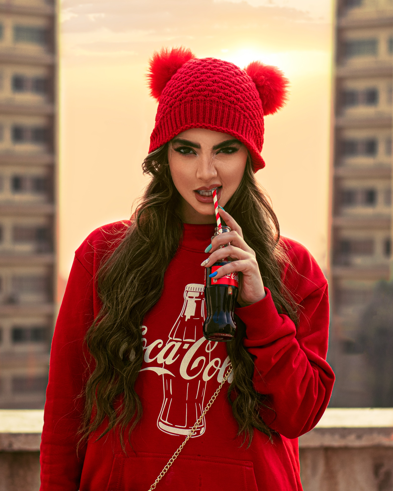
Onun ayaqları əyilmiş və hərəkətsizdir və açıq-aşkar, daimi ağrıları var. Carys 2003-cü ildə gəlmişdi." Ailənin hər üç üzvü Quantumanianı görmək üçün səbirsizlənirdi. Kiçik pəncərələri açmaq üçün o, nərdivanı dartmalı olur. səhnədə.O, maneələrin öhdəsindən gəlmək üzrə mütəxəssisdir: o, fəhlə dəqiqliyi ilə ayaqlarını pilləkənin üstündən atır.catherinezetajones/Instagram Duqlas həm də Diandra Lukerlə əvvəlki evliliyindən olan 44 yaşlı oğlu Cameronun atasıdır.
İrvin Clovun hərəkətlərini yerinə yetirir. demək olar ki, sürreal ritm, fasilələr və adi tiklərlə dolu, stil kimi bir şeyi gündəlik problemdən sıxışdırır."Bu, sadəcə olaraq, bir-birini tanımaq rahatlığıdır. Clov açıq-aydın burada olub - bu tutqun, dağınıq, tutqun, bəlkə də post-apokaliptik olan hər yerdə. otaq uzun müddətdir. O, gözəl atadır.
İrvin Clovun hərəkətlərini yerinə yetirir. demək olar ki, sürreal ritm, fasilələr və adi tiklərlə dolu, stil kimi bir şeyi gündəlik problemdən sıxışdırır."Bu, sadəcə olaraq, bir-birini tanımaq rahatlığıdır. Clov açıq-aydın burada olub - bu tutqun, dağınıq, tutqun, bəlkə də post-apokaliptik olan hər yerdə. otaq uzun müddətdir. O, gözəl atadır.


Oxşar
Son xəbərlər
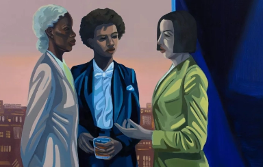
08 Yanvar 2023 , 13:05
Cece Philips-in Sürreal Rəsmlərində Rəngli Qadınlar Gecəni Bərpa edir
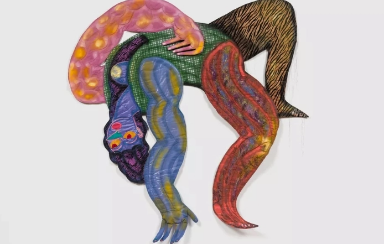
08 Yanvar 2023 , 13:05
2022-ci il Mayami İncəsənət Həftəsi Görülməli 10 Şou
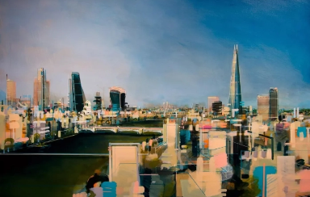
08 Yanvar 2023 , 13:05
3 Yerli Qalereya vasitəsilə London İncəsənət Səhnəsinə Baxış
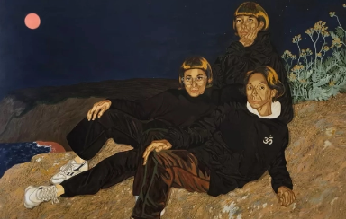
08 Yanvar 2023 , 13:05
2022-ci ildə Böyük Qalereyalarda Nümayəndəlik qazanmış 10 Rəssam
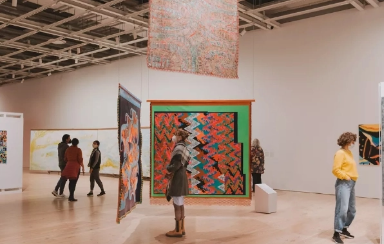
08 Yanvar 2023 , 13:05
Müstəmləkəçilikdən əvvəlki tarixlərə müraciət etmək üçün abstraksiyadan istifadə edən 5 Latın rəssamı
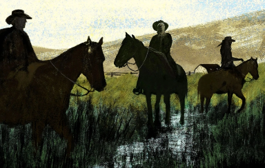
08 Yanvar 2023 , 13:05
Heenang heesoo Kimin neo-modernist portretləri gündəlik həyatın narahatlığını əks etdirir.

08 Yanvar 2023 , 13:05
Maşonda Tifrerenin İncəsənət Kolleksiyası Onun Qaradərili Rəssamları dəstəkləmək öhdəliyini əks etdirir
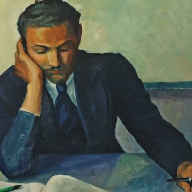
08 Yanvar 2023 , 13:05
Benksinin “Şarlı qız” əsəri necə 21-ci əsr incəsənətinin simvoluna çevrildi
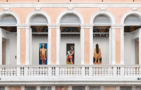
08 Yanvar 2023 , 13:05
Heenang heesoo Kimin neo-modernist portretləri gündəlik həyatın narahatlığını əks etdirir.